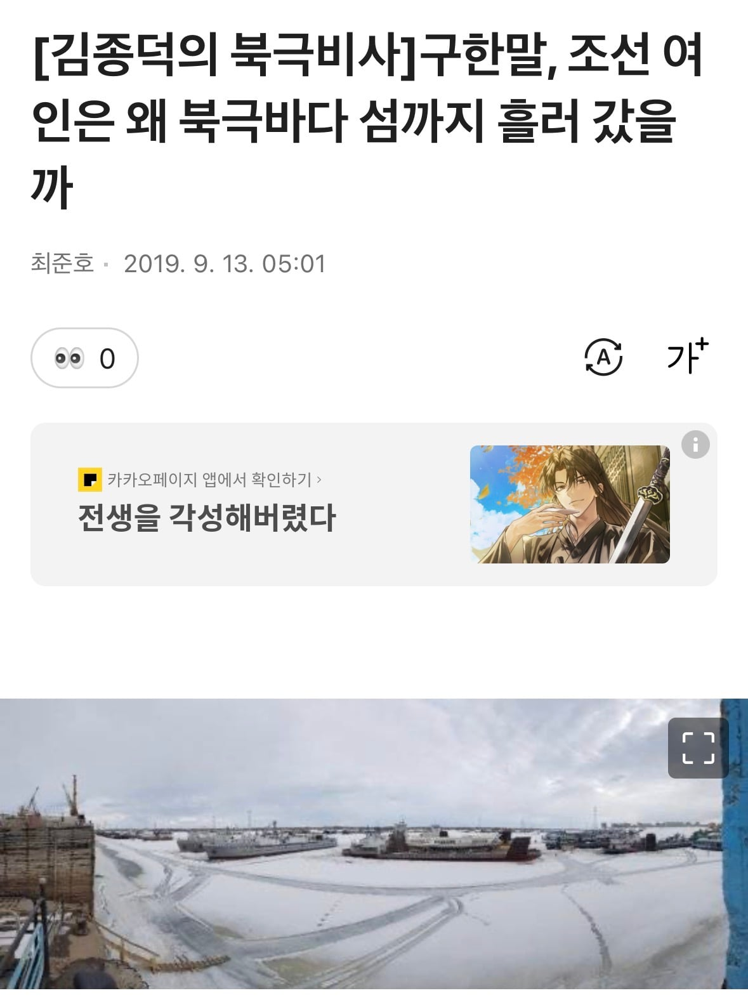
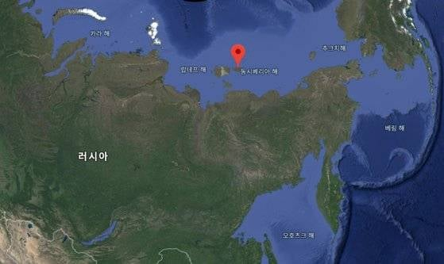

1932년 저술된 『황금의 땅 북극에서 산 30년』(Thirty Years in the Golden North) 책의 저자이자 주인공 얀 벨츨은 체코인은 북극권 섬에서 조선인 여성을 만남
그 섬은 북극권 땅 사하공화국의 북쪽 끝 북위 75도의 섬지역인 노바야시비리
웰츨은 자신이 입양한 에스키모(이누이트) 여자아이를 기르는 7년 동안 ‘한국(Korean)’ 여인과 같이 생활을 한 것으로 설명하고 있고, 그 여인은 태평양에서 여름철에 북극해로 넘어오는 정어리를 잡기 위해 일본ㆍ중국ㆍ한국에서 온 배를 타고 와서 그곳에 정착한 사람이라고 함
그리고 그녀가 흰 비단띠로 머리를 단정히 묶어 주었고 웰츨은 그것으로 인해 섬의 원주민들에게 더욱 존경을 받게 되었다고 적었음
그가 조선 여인에 대한 설명 바로 뒤에 1909년의 이야기를 서술한 것으로 보아 한국여성을 만난건 그 이전으로 추정됨
흰색 머리띠, 중국인 일본인 조선인을 명확히 구분해놓고 있고, korean이라고 정확히 써놓고있어 조선여성인거는 거의 확실해보인다함
https://v.daum.net/v/20190913050110072
‘고기잡이 배들은 섬 이곳저곳에 여자들도 포함된 일꾼들을 내려놓는다. 그리고 돌아오는 길에 그들을 다시 데려간다. 하지만 평소보다 여름철이 춥고 겨울추위가 빨리 와서 바다가 얼어버릴 위험이 있으면 돌아가는 항로 상에 있는 일꾼과 정어리만 싣고 바로 떠나버린다. 북극해를 최대한 빨리 벗어나야 했기 때문이다. 그 조선 여인도 그렇게 남겨졌지만, 그녀는 노바야시비리를 좋아했고 그곳에 스스로 남았다’
버려졌다가 정착하게 된 건가 본데.
이후 웰츨이 떠날 때 조선인 여자는 저 섬에 그대로 남았고.